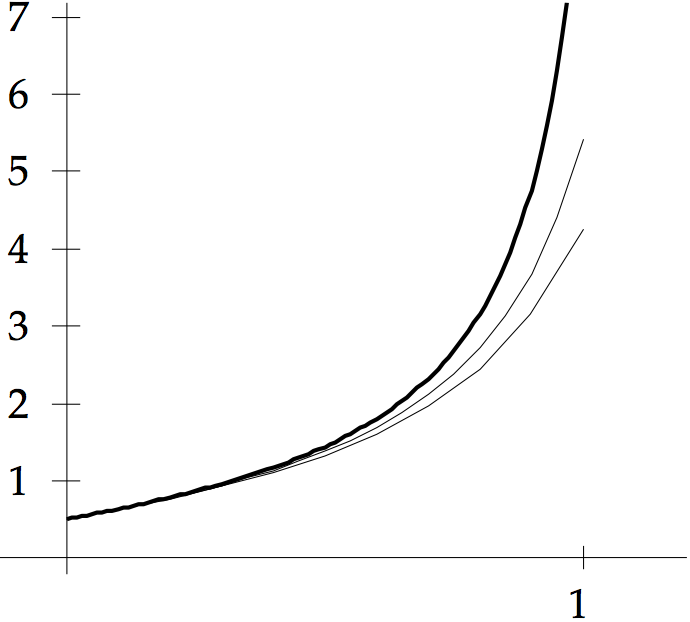
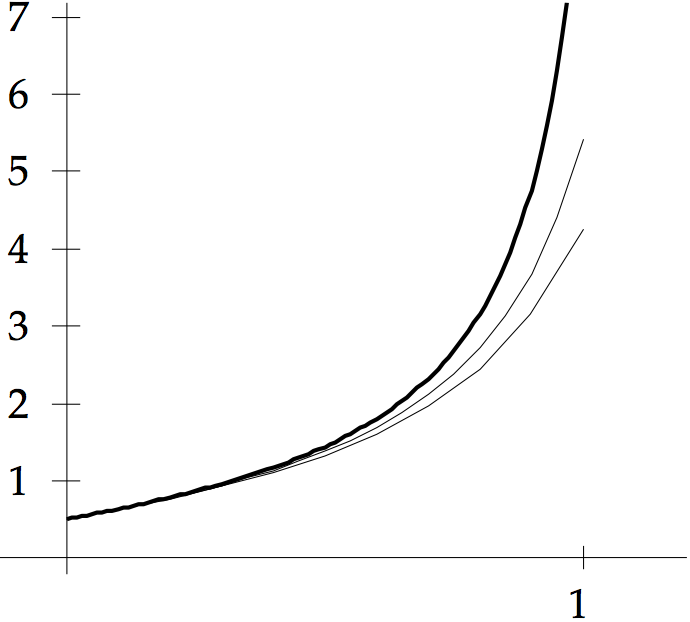

COMPUTER PROBLEMS 6.2
\(\def\ds{\displaystyle} \)
1 The Explicit Trapezoid Rule is run with
interval \([0,1]\) and
step size \(h=0.1\). The resulting approximations are
\[\text{ (a)}\ \ \ \ \begin{array}{ccc}
t_i&w_i&\text{error}\\
0.0& 1.00000000& 0.00000000\\
0.1& 1.00500000& 0.00000000\\
0.2& 1.02000000& 0.00000000\\
0.3& 1.04500000& 0.00000000\\
0.4& 1.08000000& 0.00000000\\
0.5& 1.12500000& 0.00000000\\
0.6& 1.18000000& 0.00000000\\
0.7& 1.24500000& 0.00000000\\
0.8& 1.32000000& 0.00000000\\
0.9& 1.40500000& 0.00000000\\
1.0& 1.50000000& 0.00000000\\
\end{array} \hspace{.8in}\text{ (b)}\ \ \ \
\begin{array}{ccc}
t_i&w_i&\text{error}\\
0.0& 1.00000000& 0.00000000\\
0.1& 1.00050000& 0.00016661\\
0.2& 1.00300325& 0.00033303\\
0.3& 1.00954083& 0.00050020\\
0.4& 1.02223277& 0.00067026\\
0.5& 1.04339299& 0.00084609\\
0.6& 1.07568600& 0.00103066\\
0.7& 1.12235142& 0.00122564\\
0.8& 1.18752412& 0.00142880\\
0.9& 1.27669768& 0.00162905\\
1.0& 1.39740944& 0.00179702\\
\end{array}\]
\[\text{ (c)}\ \ \ \ \begin{array}{ccc}
t_i&w_i&\text{error}\\
0.0& 1.00000000& 0.00000000\\
0.1& 1.23200000& 0.00167806\\
0.2& 1.54788480& 0.00482242\\
0.3& 1.98315001& 0.01056553\\
0.4& 2.59078717& 0.02090931\\
0.5& 3.45092851& 0.03941445\\
0.6& 4.68636091& 0.07246033\\
0.7& 6.48779805& 0.13157063\\
0.8& 9.15558060& 0.23775068\\
0.9& 13.16938714& 0.42966371\\
1.0& 19.30632155& 0.77921537\\
\end{array} \hspace{.8in}\text{ (d)}\ \ \ \
\begin{array}{ccc}
t_i&w_i&\text{error}\\
0.0& 1.00000000& 0.00000000\\
0.1& 1.00002500& 0.00001500\\
0.2& 1.00045003& 0.00012998\\
0.3& 1.00287774& 0.00044479\\
0.4& 1.01135298& 0.00106037\\
0.5& 1.03383030& 0.00208689\\
0.6& 1.08452676& 0.00366354\\
0.7& 1.18898254& 0.00596312\\
0.8& 1.39671933& 0.00897451\\
0.9& 1.81575932& 0.01088674\\
1.0& 2.71644404& 0.00183779\\
\end{array}\]
\[\text{ (e)}\ \ \ \ \begin{array}{ccc}
t_i&w_i&\text{error}\\
0.0& 1.00000000& 0.00000000\\
0.1& 1.09132231& 0.00007057\\
0.2& 1.16950222& 0.00010487\\
0.3& 1.23844045& 0.00012188\\
0.4& 1.30046139& 0.00013006\\
0.5& 1.35707533& 0.00013347\\
0.6& 1.40932553& 0.00013421\\
0.7& 1.45796632& 0.00013341\\
0.8& 1.50356287& 0.00013173\\
0.9& 1.54655084& 0.00012953\\
1.0& 1.58727399& 0.00012706\\
\end{array} \hspace{.8in}\text{ (f)}\ \ \ \
\begin{array}{ccc}
t_i&w_i&\text{error}\\
0.0& 1.00000000& 0.00000000\\
0.1& 1.00005000& 0.00002500\\
0.2& 1.00049988& 0.00010003\\
0.3& 1.00224597& 0.00022506\\
0.4& 1.00675859& 0.00039911\\
0.5& 1.01600550& 0.00061848\\
0.6& 1.03227754& 0.00087404\\
0.7& 1.05789304& 0.00114885\\
0.8& 1.09482212& 0.00141807\\
0.9& 1.14434840& 0.00165369\\
1.0& 1.20690398& 0.00183285\\
\end{array}\]
3 The Explicit Trapezoid Method is run for the six step sizes
\(h\), and the error is plotted on a loglog graph. For differential
equation (a), the Trapezoid Method integrates exactly, and the
error is zero for all steps sizes. The error plots for (b), (c), (d), and (e), respectively, are shown below.
5 Trapezoid Method output with initial conditions \(y_0=0\) (left) and (b) \(y_0=1/2\) (right). The correct solution from Exercise 6.1.7 is added (thicker curve). In some cases, the approximate solutions are covered by the exact solutions.
 

7 The exact solution (blue curve) along with the approximate solution
with step size 0.1 (red curve) is shown
in the top two figures for parts (a) and (b), respectively.
The loglog plot of errors versus step size is shown in the bottom two figures.


9 (a) The exact solution from Exercise 6.1.17 with initial condition \(y(0) = 1\)
is the top curve in blue, in the figure below. The 6 red curves below the blue curve
are the approximations for step size \(0.1\times 2^{-i}\) for \( 0 \leq i \leq 5.\)

9 (b) Same as (a), but using initial condition \(y(0) = \sqrt{3}\) (see Exercise 6.1.17).